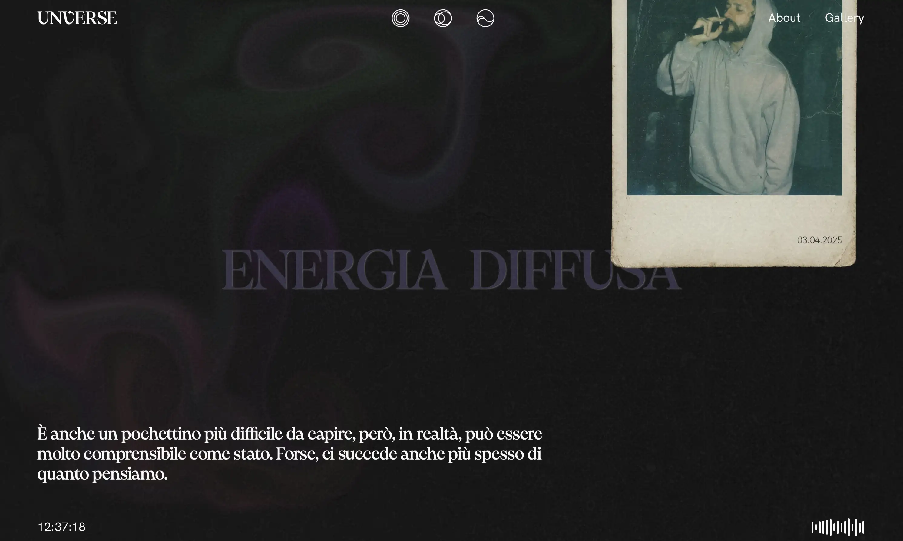
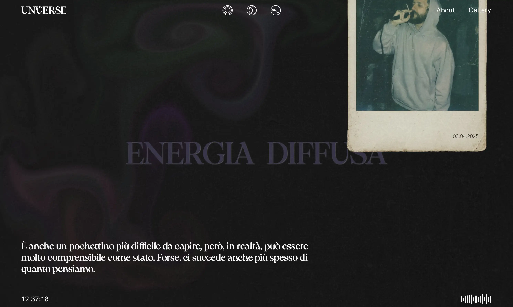
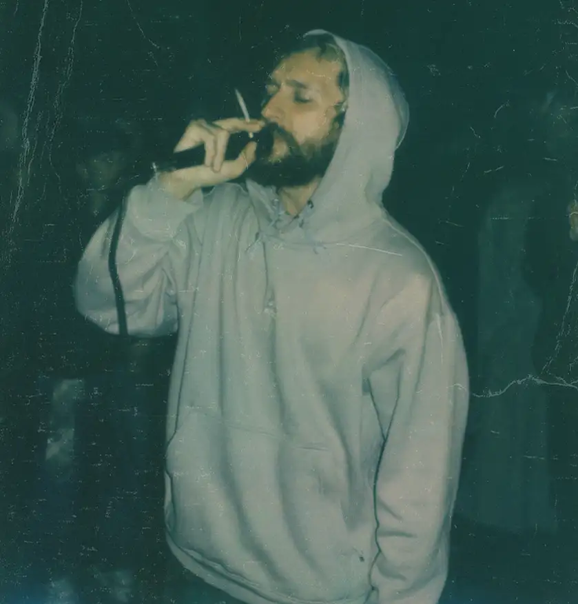
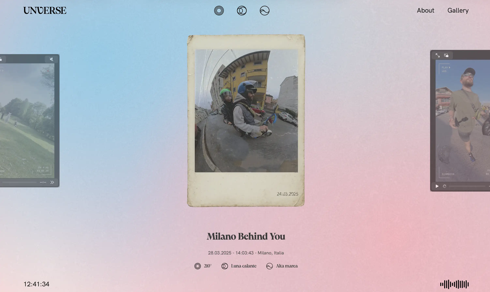
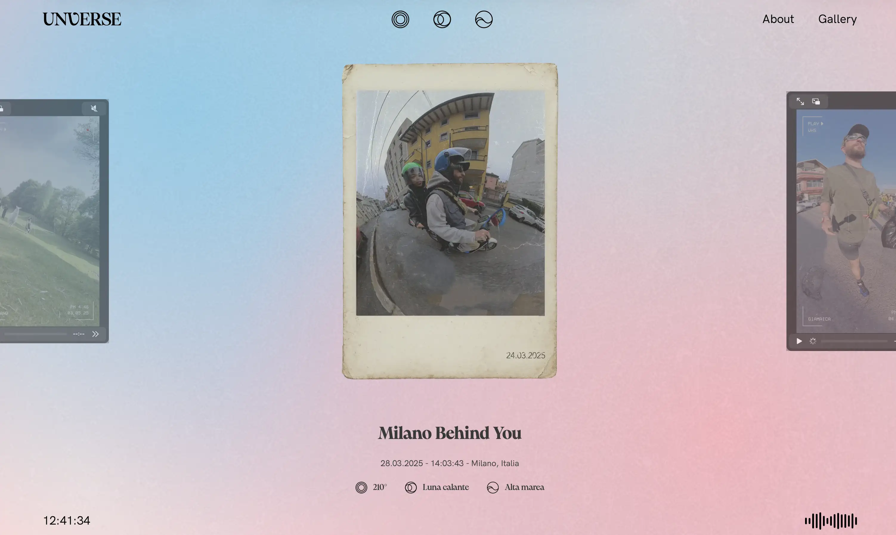

PROJECT
Unverse
Unverse is a university project that explores the moods of artist Venerus through immersive, interactive scenarios. The website evolves with natural variables, offering a continuously changing experience of his emotions.
2025
Segato Niccolò, Menoni Simone, Chinni Diego, Samba Marie, Roccaro Arianna, Marcon Sabrina
University Project
 


Unverse
2025 - Politecnico di Milano
5 collaborators
 
